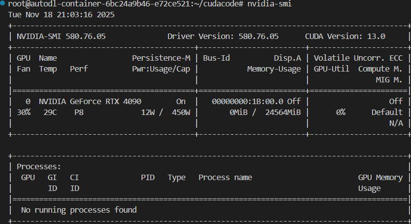
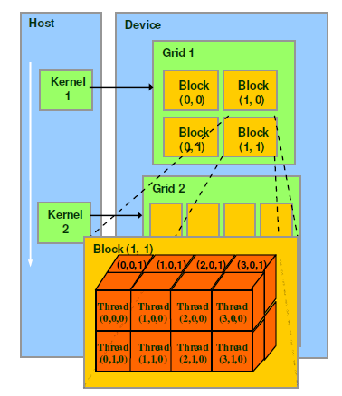
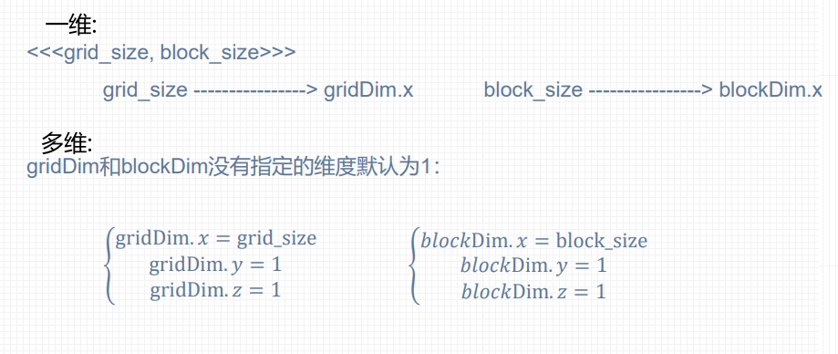
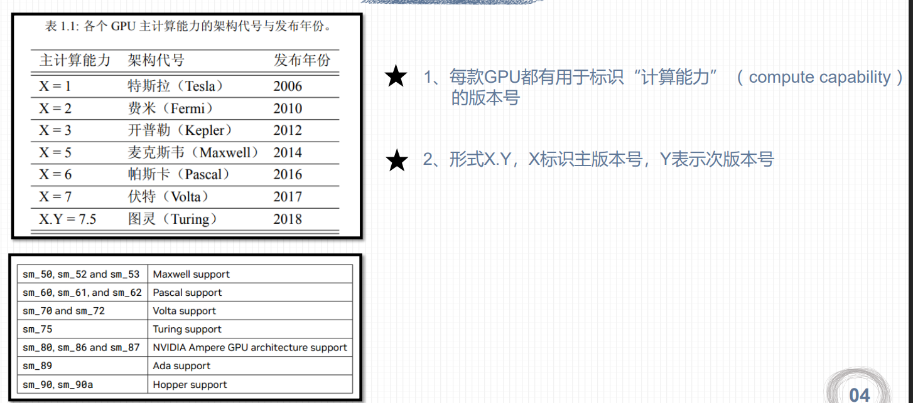
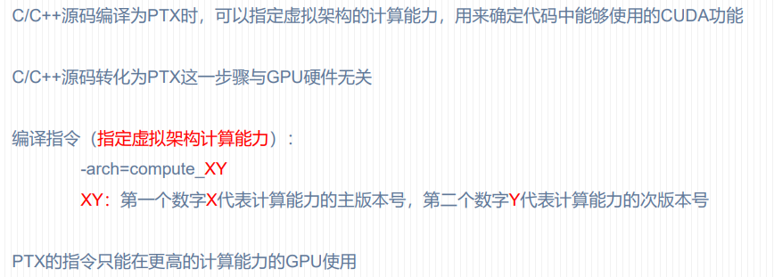
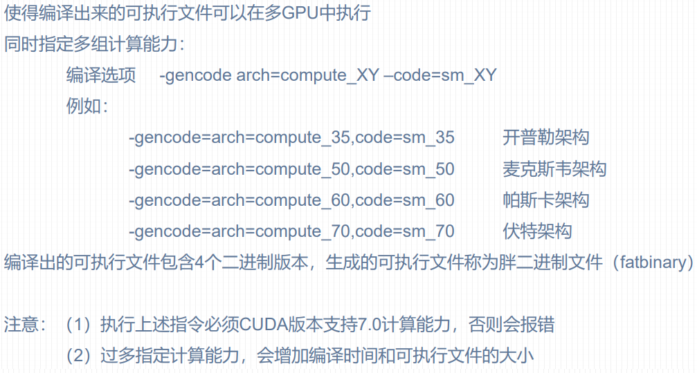
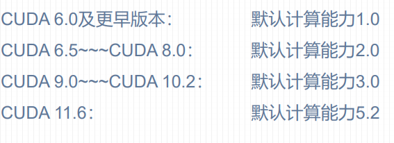
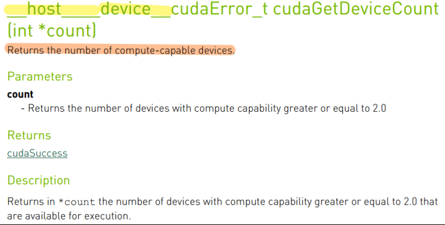
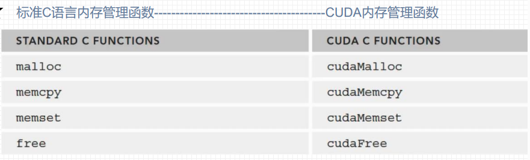

cuda编程入门
CUDA编程入门
基础知识
nvidia-smi指令

更多的命令问ai吧~
从cpp到cuda编程
一般的程序:
1 | //hello.cpp |
1 | g++ hello.cpp -o hello |
nvcc:
- 安装cuda即可使用nvcc
- nvcc支持纯c++代码编译
- 编译扩展名为.cu的cuda文件
1 | nvcc hello.cu -o hello |
1 | //hello.cu |
1 | root@autodl-container-6bc24a9b46-e72ce521:~/cudacode/2.1lesson# nvcc hello.cu -o hellocu |
核函数
核函数 是在GPU上并行执行的函数。它是CUDA编程模型的核心，允许你将计算任务分解成成千上万个并行线程，从而利用GPU的大规模并行计算能力。
- 执行位置：在GPU上并行执行,具有异步性。
- 并行方式：通过大量线程以“单指令多线程”的模式并行执行。
- 调用方式：由CPU（主机）调用，但运行在GPU（设备）上。
- 返回类型：必须返回
void。 - 只能访问GPU内存
- 不行使用变长参数 静态变量 函数指针
- 不支持c++的iostream
定义
使用 __global__ 关键字来声明一个函数为核函数。
1 | // 使用 __global__ 关键字定义核函数 |
执行空间说明符:
__global__：在GPU上执行，由CPU调用。这是我们定义核函数时使用的。__device__：在GPU上执行，由GPU调用（通常是从其他__device__函数或核函数中调用）。__host__：在CPU上执行，由CPU调用（就是普通的C++函数）。可以同时使用__host__ __device__，使得该函数既能被CPU调用，也能被GPU编译。
cuda程序编写流程:
1 | int main(void) |
调用
调用核函数时，需要使用特殊的尖括号语法 <<< ... >>> 来指定执行配置，即如何组织线程来执行这个核函数。
1 |
|
线程 线程块 网格
- 线程：最基本的执行单元。
- 线程块：一组线程的集合。
- 一个块内的线程可以：
- 通过共享内存高效地交换数据。
- 使用
__syncthreads()函数进行同步。
- 线程块之间是相互独立的。它们可以以任何顺序、在任何SM（流多处理器） 上执行。
- 一个线程块的执行不应依赖于另一个线程块的结果。这是CUDA编程模型的一个基本假设。
- 一个块内的线程可以：
- 网格：所有线程块的集合。一个核函数启动的所有线程块构成一个网格。
CUDA线程模型
线程模型结构

CUDA线程模型是一个分层的并行编程模型，它将并行任务分解为多个层次，从粗粒度到细粒度依次是：
网格(grid) → 线程块(block) → 线程束 → 线程
线程:最基本的执行单元
- 每个线程是独立的执行路径
- 执行相同的核函数代码，但处理不同的数据
- 有自己的程序计数器、寄存器组和本地内存
线程块:协作的线程组
- 共享内存：块内所有线程共享一块快速片上内存
- 同步能力：通过
__syncthreads()实现块内线程同步 - 独立性：不同线程块之间相互独立，可以乱序执行
- 维度：可以是1D、2D或3D布局
网格: 完整的执行单元
- 包含所有执行同一核函数的线程块
- 当核函数启动时，就定义了一个网格
- 网格中的线程块被调度到不同的SM上执行
注意:
- 线程分块是逻辑划分,物理上线程不分块
- 配置线程: <<<网格大小,线程块大小>>>
- 最大允许线程块大小1024
- 最大允许网格大小(针对一维网格)
1 |
|
1 | root@autodl-container-6bc24a9b46-e72ce521:~/cudacode/2.3lesson# nvcc ex1.cu -o ex1 |
一维线程模型
- 每个线程在
核函数中都有一个唯一的身份标识 - 每个线程的唯一标识由<<<grid_size,block_size>>>确定,grid_size,block_size保存在内建变量(build-in variable) 目前考虑的是一维情况
- gridDim.x : 该数值等于执行配置中变量grid_size的值
- blockDim.x : 该数值等于执行配置中变量block_size的值
- 线程索引保存为内建变量
- blockIdx.x : 该变量指定一个线程在一个网格中的线程块索引值,范围为0~gridDim.x-1
- threadIdx.x : 该变量指定一个线程在一个线程块中的线程索引值,范围为0~blockDim.x-1

1 | // 一维网格和块 计算线程索引 |
1 |
|
1 | root@autodl-container-6bc24a9b46-e72ce521:~/cudacode/2.3lesson# nvcc ex1.cu -o ex1 |
多维线程





网格和线程块的限制条件:

线程全局索引计算方式
线程全局索引
一维网格 一维线程块:

二维网格 二维线程块:

三维网格 三维线程块:

NVCC编译流程和GPU计算能力
NVCC编译流程
NVCC（NVIDIA CUDA Compiler）的编译流程分为多个阶段，主要处理主机端（Host，CPU）代码和设备端（Device，GPU）代码的混合编译。


PTX
PTX（Parallel Thread Execution）是CUDA平台为基于 GPU的通用计算而定义的虚拟机和指令集
- 虚拟指令集：不直接对应具体GPU硬件，而是抽象中间表示
- 跨架构兼容：可在不同代际的NVIDIA GPU上运行
1 | CUDA源码 (.cu) |
- nvcc编译命令总是使用两个体系结构:一个是虚拟的中间体系结构，另一个是实际的GPU体系结构
- 虚拟架构更像是对应用所需的GPU功能的声明
- 虚拟架构应该尽可能选择低----适配更多实际GPU
- 真实架构应该尽可能选择高----充分发挥GPU性能
- 虚拟架构应低于真实架构
GPU架构和计算能力

并非GPU 的计算能力越高，性能就越高
CUDA程序兼容性问题
虚拟架构计算能力

1 | nvcc helloworld.cu –o helloworld -arch=compute_61 |
真实架构计算能力

1 | nvcc helloworld.cu –o helloworld -arch=compute_61 -code=sm_60 |
多个GPU版本编译

NVCC即时编译
-
在运行可执行文件时，从保留的PTX代码临时编译出cubin文件
-
在可执行文件中保留PTX代码，nvcc编译指令指定所保留的PTX代码虚拟架构:
1
2
3-gencode arch=compute_XY ,code=compute_XY
#两个计算能力都是虚拟架构计算能力
#两个虚拟架构计算能力必须一致
NVCC编译默认计算能力
不同版本CUDA编译器在编译CUDA代码时，都有一个默认计算能力

CUDA编程简单实践
CUDA矩阵加法运算程序
CUDA程序基本框架

设置GPU设备
获取GPU数量:

1 | int iDeviceCount = 0; |
设置GPU执行时使用的设备:

1 | int iDev = 0; |
1 |
|
内存管理
CUDA通过内存分配 数据传递 内存初始化 内存释放进行内存管理

内存分配
1 | __host__ __device__ cudaError_t cudaMalloc(void** devPtr, size_t size); |
devPtr: 指向设备内存指针的指针。函数会将分配的设备内存地址存储在这个指针中。size: 要分配的内存大小（以字节为单位）。- 返回
cudaError_t类型值，表示函数执行的状态。如果成功，返回cudaSuccess
使用 cudaMalloc 分配的内存必须使用 cudaFree 来释放。
数据拷贝
cudaMemcpy 用于在主机内存和设备内存之间复制数据。
1 | __host__ cudaError_t cudaMemcpy(void* dst, const void* src, size_t count, cudaMemcpyKind kind) |
dst: 目标内存地址src: 源内存地址count: 要复制的字节数kind: 复制方向，指定数据是从主机到设备，还是从设备到主机等。这是一个枚举类型，主要取值有：cudaMemcpyHostToHost： 主机 → 主机cudaMemcpyHostToDevice： 主机 → 设备cudaMemcpyDeviceToHost： 设备 → 主机cudaMemcpyDeviceToDevice： 设备 → 设备cudaMemcpyDefault： 根据指针地址自动判断方向（默认方式只允许在支持统一虚拟寻址的系统上使用）
内存初始化
cudaMemset 用于设置设备内存的值，功能类似于标准 C 的 memset 函数。
1 | __host__ cudaError_t cudaMemset(void* devPtr, int value, size_t count) |
devPtr: 指向设备内存的指针value: 要设置的值（以字节为单位设置）count: 要设置的字节数
cudaMemset 是按字节操作的，这与标准 memset 一致。这对于初始化 char 数组或清零内存非常有用，但对于设置非字节类型的特定值（如将所有 int 设置为 1）则不方便。
内存释放
cudaFree 用于释放由 cudaMalloc、cudaMallocManaged 等函数分配的设备内存。
1 | __host__ __device__ cudaError_t cudaFree(void* devPtr) |
-
devPtr: 指向要释放的设备内存的指针 -
只能释放由 CUDA 内存分配函数分配的内存。
-
试图释放无效的指针或已经释放的指针会导致未定义行为（通常是运行时错误）。
-
在主机程序退出前释放所有分配的设备内存是一个好习惯，但现代 CUDA 驱动在程序结束时也会自动清理。
自定义设备函数
设备函数（device function）
- 定义只能执行在GPU设备上的函数为设备函数
- 设备函数只能被核函数或其他设备函数调用
- 设备函数用device修饰
核函数（kernel function）
- 用global修饰的函数称为核函数，一般由主机调用，在设备中执行
- global 修饰符既不能和host同时使用，也不可与device 同时使用
主机函数（host function）
- 主机端的普通 C++ 函数可用 host 修饰
- 对于主机端的函数， __host__修饰符可省略
- 可以用 host 和 device 同时修饰一个函数减少冗余代码。编译器会针对主机 和设备分别编译该函数。
一维矩阵加法
1 |
|
Tips:
-
上述代码人为设置一个线程可以负责一个数据,但当数据个数由512变化为513时,
dim3 grid(iElemCount/32);就无法保证一个线程负责一个数据,因此要改为dim3 grid((iElemCount + block.x - 1) / 32);,即向上取整,此时线程个数会多于矩阵元素个数,因此在GPU上的运算函数要附加if条件。 -
上述核函数可以拆分为核函数调用设备函数的形式
-
结合上述两条,修改后的代码如下:
1
2
3
4
5
6
7
8
9
10
11
12
13
14
15
16
17
18
19
20
21
22
23
24
25
26
27
28
29
30
31
32
33
34
35
36
37
38
39
40
41
42
43
44
45
46
47
48
49
50
51
52
53
54
55
56
57
58
59
60
61
62
63
64
65
66
67
68
69
70
71
72
73
74
75
76
77
78
79
80
81
82
83
84
85
86
87
88
89
90
91
92
93
94
95
96
97
98
99
100
101
102
103
104
105
106
107
108
109
110
111
112
113
114
115
116
117
118
119
120
121
122
123
124
125
126
127
128
129
130
131
132
133
134
135
__device__ float add(const float x,const float y)
{
return x+y;
}
__global__ void addFromGPU(float *A ,float *B ,float *C,const int N)
{
const int bid = blockIdx.x;
const int tid = threadIdx.x;
const int id = tid+bid*blockDim.x;
if(id>=N) return ;
C[id]=add(A[id],B[id]);
}
void initialData(float *addr,int elemCount)
{
for(int i=0;i<elemCount;i++)
{
addr[i]=(float)(rand()& 0xff) / 10.f;
}
return ;
}
void setGPU()
{
//1.检查计算机GPU的数量
int iDeviceCount=0;
cudaError_t error = cudaGetDeviceCount(&iDeviceCount);
if(error!= cudaSuccess || iDeviceCount ==0)
{
printf("NO CUDA campatable GPU found\n");
exit(-1);
}
else
{
printf("The count of GPUs is %d \n",iDeviceCount);
}
//2.设置执行
int iDev = 0;
error = cudaSetDevice(iDev);
if(error!=cudaSuccess)
{
printf("fail to set GPU 0 for computing.\n");
exit(-1);
}
else
{
printf("set GPU 0 for computing.\n");
}
}
int main()
{
// 1.设置GPU设备
setGPU();
//2.分配主机内存和设备内存,并初始化
int iElemCount = 513; //一个矩阵的元素数目
size_t stBytesCount = iElemCount * sizeof(float); //字节数
//(1)分配主机内存并初始化
float *fpHost_A,*fpHost_B,*fpHost_C;
fpHost_A = (float*) malloc(stBytesCount);
fpHost_B = (float*) malloc(stBytesCount);
fpHost_C = (float*) malloc(stBytesCount);
if(fpHost_A!=NULL&&fpHost_B!=NULL&&fpHost_C!=NULL)
{
//主机内存初始化为0
memset(fpHost_A,0,stBytesCount);
memset(fpHost_B,0,stBytesCount);
memset(fpHost_C,0,stBytesCount);
}
else
{
printf("Fail to allocate host memory!\n");
exit(-1);
}
// (2)分配设备内存 并初始化
float *fpDevice_A,*fpDevice_B,*fpDevice_C;
cudaMalloc((float**)&fpDevice_A,stBytesCount);
cudaMalloc((float**)&fpDevice_B,stBytesCount);
cudaMalloc((float**)&fpDevice_C,stBytesCount);
if (fpDevice_A != NULL && fpDevice_B != NULL && fpDevice_C != NULL)
{
cudaMemset(fpDevice_A,0,stBytesCount);
cudaMemset(fpDevice_B,0,stBytesCount);
cudaMemset(fpDevice_C,0,stBytesCount);
}else
{
printf("fail to allocate memory\n");
free(fpHost_A);
free(fpHost_B);
free(fpHost_C);
exit(-1);
}
//3.初始化主机中的数据
srand(666);
initialData(fpHost_A,iElemCount);
initialData(fpHost_B,iElemCount);
//4.从主机复制数据到设备
cudaMemcpy(fpDevice_A,fpHost_A,stBytesCount,cudaMemcpyHostToDevice);
cudaMemcpy(fpDevice_B,fpHost_B,stBytesCount,cudaMemcpyHostToDevice);
cudaMemcpy(fpDevice_C,fpHost_C,stBytesCount,cudaMemcpyHostToDevice);
//5.调用核函数在设备上计算
dim3 block(32);
dim3 grid((iElemCount-1+block.x)/block.x);//保证每个线程负责一个数据
addFromGPU<<<grid,block>>>(fpDevice_A,fpDevice_B,fpDevice_C,iElemCount);
//6.将计算得到的数据从设备传给主机
cudaMemcpy(fpHost_C,fpDevice_C,stBytesCount,cudaMemcpyDeviceToHost);//隐式保证GPU执行完之后再执行
for(int i = 0;i<10;i++)
{
printf("idx=%2d\tmatrix_A:%.2f\tmatrix_B:%.2f\tresult=%.2f\n", i+1, fpHost_A[i], fpHost_B[i], fpHost_C[i]);
}
//7.释放主机与设备内存
free(fpHost_A);
free(fpHost_B);
free(fpHost_C);
cudaFree(fpDevice_A);
cudaFree(fpDevice_B);
cudaFree(fpDevice_C);
cudaDeviceReset();
return 0;
}